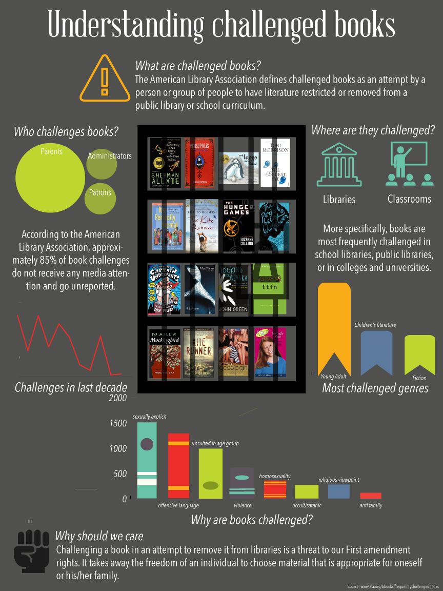

Understanding Challenged Books
Highlighting the issue of challenged books in the United States

The Problem
The infographic “Understanding Challenged Books” was inspired by my struggle to find books in public libraries that have been controversial in nature. My attempt in this infographic was to highlight the fact that books are frequently challenged due to trivial reasons, and this prevents a larger section of the society to have access to such literature. In an age where books are accessed in their digital format, there is still a need to include these books in the libraries for people who do not use the digital format of books.
The Solution

All data used in the infographic has been collected from the American Libraries Association website, which collects and publishes annual reports on the number and reasons of challenged books in the United States. This annual report contains the title, author and publisher of challenged books per year, along with the reasons on why a certain individual or organization sought to remove the literature. The genre of the books was derived from their respective Wikipedia entries. The statistics shown in the infographic are for books challenged in the last decade. The only piece of information that was missing from the reports is the length of time for which the challenges are valid. I believe this would have shed more light on how such an action is affecting access to books that should be available for the target audience.
Project Details
- Team MembersProxima DasMohapatra
- Date2016
- CategoriesInformation Visualization